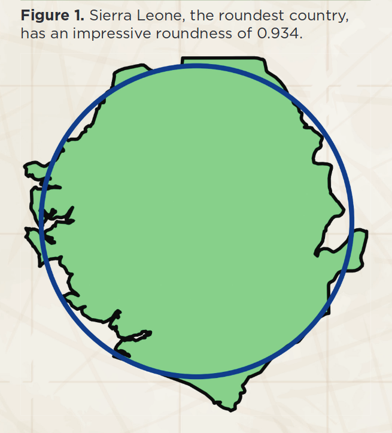

From Ciruelos G. 2018. What is the Roundest Country? Math Horizons 26(3) 26-27.
image source payscale.com
welly %>%
pivot_longer(cols = 2:5) %>% rename(Population = name) %>%
ggplot() +
geom_histogram(aes(x = value),
binwidth = 10,
fill = "grey", colour = "black", lwd = 0.25) +
xlab("Percent") + ylab("Number of areas") +
facet_wrap(~ Population, ncol = 4)
welly %>%
pivot_longer(cols = 2:5) %>% rename(Population = name) %>%
ggplot() +
geom_boxplot(aes(x = Population, y = value),
fill = "grey", colour = "black") +
ylab("Percent")
GGally::ggscatmat(welly, columns = 2:5)

Tokyo, Japan
source
NASA, NOAA find 2014 and
now also 2015 warmest year in
modern record, NASA Goddard
Institute for Space Studies
image source xkcd.com
Tobler WR. 1970. A computer movie simulating urban growth in the
Detroit region. Economic Geography 46 234-240.
See also, the Annals of the AAG
forum in volume 94(2), 2004
image source csstails.deviantart.com
Percent of renters in East Bay, from 2010 Census
Starbucks locations in North America
data from poi-factory.com